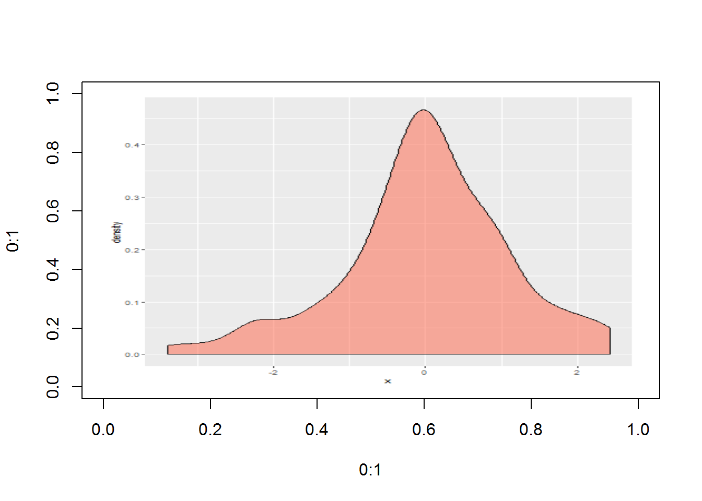

R 병렬 프로그래밍
RESTful API 개발환경 - plumber
RESTful API 1
R 코드를 RESTful API 서비스로 제공하고자 할 경우 정말 훌륭한 서비스를 만드는 것도 중요하지만, 결국 시작은 헬로월드를 찍는 것부터 시작된다. 즉, RESTful API로 개발된 결과물을 빨리 확인할 수 있는 통합개발환경이 중요한 역할을 담당하게 된다.
curl API 테스트 2
RESTful API 서비스를 제작하는 것과 별도로 제작된 서비스가 제대로 된 것인지 점검하는 과정이 필요하다. 이를 위해서 curl을 흔히 사용하는데 기본적인 사용법을 익혀두는 것이 좋다.
curl은 소프트웨어로 맥이나 리눅스에는 기본으로 장착되어 있어 별도 설치가 필요없지만, 윈도우 사용자의 경우 Git Bash를 다운로드 받아 별도 설치를 하면 된다. curl 기본적인 사용법은 다음 동영상을 참조한다.
RESTful API 개발과 테스트에 많이 사용되는 명령어는 다음과 같다. 특히, { JSON : Placeholder }, Fake Online REST API for Testing and Prototyping Serving ~200 millions API requests per month 사이트에서 동영상으로 학습한 내용을 실습하는 것도 가능하다.
- 단순 GET 요청
curl https://jsonplaceholder.typicode.com/postscurl https://jsonplaceholder.typicode.com/posts/1
- 헤더(header) 정보 포함 (–include, -i)
curl --include https://jsonplaceholder.typicode.com/posts/1
- 헤더(header) 정보만 가져오기 (–head, -I)
curl --head https://jsonplaceholder.typicode.com/posts/1
- 파일로 저장 (-o, –output)
curl -o test.txt https://jsonplaceholder.typicode.com/posts/1
- 바이너리 파일 저장 (-O, –remote-name)
curl -O http://i.imgur.com/QRlAg0b.png
- 매개변수를 통한 데이터 전달 : POST (-d, –data)
curl -d "title=Hello&body=Hello World" https://jsonplaceholder.typicode.com/posts
- PUT Data (-X PUT -d)
curl -X PUT -d "title=Hello&body=Hello World" https://jsonplaceholder.typicode.com/posts/1
- 데이터 삭제 (-X DELETE)
curl -X DELETE https://jsonplaceholder.typicode.com/posts/1
- Redirection 적용 (-L)
curl http://google.com# 원하는 바를 얻지 못함.curl -L http://google.com
헬로월드
가장 먼저 hello_world 함수를 /hello_world 서비스로 제공한다. httr 팩키지 GET 함수를 활용하여 웹브라우져를 열어 테스트하는 대신 RStudio 개발환경에서 일원화하여 개발속도를 가속시킨다.
헬로월드 서비스 코드
API 서비스 코드를 다음과 같이 작성한다. 즉, http://localhost:8000/hello_world를 끝점으로 설정하여 서비스를 제공하는데, 요청하면 “안녕하세요… 반갑습니다.” 메시지가 전달된다.
#* @get /hello_world
hello_world <- function() {
return("안녕하세요... 반갑습니다.")
}헬로월드 서비스 호출 및 테스트를 R 콘솔 방식으로 혹은 터미널에서 수행하는 방식이 있다. 먼저 R 코드를 통해 httr 팩키지 GET()함수로 요청해서 결과를 받을 수도 있다.
# 0. 환경설정 ---------------------------------
library(httr)
library(tidyverse)
# 1. 헬로 월드: GET ---------------------------------
GET("http://localhost:8000/hello_world") %>%
content()$error
$error[[1]]
[1] "404 - Resource Not Found"
또 다른 방식은 curl 명령어를 사용하는 것도 있다. 이것이 좋은 이유는 RStudio에서 RESTful API 서비스를 제공하게 되면 다른 작업을 할 수가 없어 별도 RStudio를 띄워 놔야 하거나 하는 번거러움이 있지만, curl을 사용하게 되면 Alt + T 단축키로 터미널에서 curl 명령어로 테스트를 바로 할 수 있다.
curl http://localhost:8000/hello_world % Total % Received % Xferd Average Speed Time Time Time Current
Dload Upload Total Spent Left Speed
0 0 0 0 0 0 0 0 --:--:-- --:--:-- --:--:-- 0
100 38 100 38 0 0 3256 0 --:--:-- --:--:-- --:--:-- 3454
{"error":["404 - Resource Not Found"]}
매개변수 넘기는 경우
단순히 서비스를 호출하는 대신에 인증을 위해 ID, 비밀번호등을 넘기는 경우도 흔하다. 이런 경우 인자를 넘기는 방식이 다양하다. POST를 전통적으로 ?로 시작해서 인자를 넘긴다고 지정하고 다수 매개변수를 넘길 때 매개변수를 &로 구분해서 넘긴다.
혹은 POST 내부 인자로 query를 사용해서 list 자료형으로 넘기는 것도 가능하고, path에 지정하는 것도 가능하다.
#* @post /sum_two
plus_operation <- function(a, b) {
return(list(result = as.numeric(a) + as.numeric(b)))
}
#* @get /iris/<sp>/<n:int>
function(n, sp) {
iris %>% dplyr::filter(Species == sp) %>%
.[as.integer(n), ]
}매개변수 넘기는 API 테스트코드를 다음과 같이 작성하는 방식도 있다.
R 콘솔
# 2. 매개변수 넘기기: POST ---------------------------------
## 2.1. 매개변수 2개 넘겨 더하기
POST("http://localhost:8000/sum_two?a=1&b=2") %>%
content()$error
$error[[1]]
[1] "404 - Resource Not Found"
#POST("http://localhost:8000/sum_two", query=list(a=1, b=3)) %>%
# content()터미널
curl -d "a=1&b=2" http://localhost:8000/sum_two % Total % Received % Xferd Average Speed Time Time Time Current
Dload Upload Total Spent Left Speed
0 0 0 0 0 0 0 0 --:--:-- --:--:-- --:--:-- 0
100 45 100 38 100 7 2626 483 --:--:-- --:--:-- --:--:-- 2714
{"error":["404 - Resource Not Found"]}
경로명으로 매개변수를 넘기는 것도 가능하다.
## 2.2. 깔끔한 매개변수 넘기기
GET("http://localhost:8000", path = "iris/virginica/3") %>%
content()$error
$error[[1]]
[1] "404 - Resource Not Found"
그래프
그래프 시각화를 하는 API
단순히 문자와 숫자를 주고받는 것 뿐만 아니라 R의 강점인 그래프도 가능하다. 먼저 시각화하는 함수를 ggp2dens() 함수로 작성하고 끝점으로 ggplot2_density로 노출시킨다.
#* @get /ggplot2_density
#* @png
ggp2dens <- function(seed = rnorm(1), fill.colour = "tomato", alpha = 1) {
set.seed(seed)
library(ggplot2)
p <- data.frame(x = rnorm(100)) %>% ggplot(aes(x)) +
geom_density(fill = fill.colour, alpha = alpha)
print(p)
}그래프 시각화를 하는 API 테스트를 다음과 같이 각각 작성한다.
# 3. 그래프 ---------------------------------
plot(0:1, 0:1, type = "n")
GET("http://localhost:8000/ggplot2_density?seed=77&fill.colour=tomato&alpha=0.5") %>%
content() %>% rasterImage(0, 0, 1, 1)Error in UseMethod("as.raster"): 클래스 "list"의 객체에 적용된 'as.raster'에 사용할수 있는 메소드가 없습니다
인터랙티브 그래프
인터랙티브 그래프 API
정적 그래프는 물론이고 인터랙티브 그래프도 가능하다. htmlwidget인 dygraph()를 동원해서 태양흑점 데이터를 인터랙티브하게 시각화해보자.
#' @get /spots/<year>/graph
#' @serializer htmlwidget
function(year){
dygraph(datasets::sunspots, main = "Sunspots") %>%
dyRangeSelector(dateWindow = c(paste0(year,"-01-01"),
paste0(year,"-12-31"))
)
}인터랙티브 그래프 시각화를 하는 API 테스트를 다음과 같이 각각 작성한다.
# 3. 그래프 ---------------------------------
GET("http://localhost:8000/spots/1900/graph") %>%
content()$error
$error[[1]]
[1] "404 - Resource Not Found"
JSON 파일을 인자로 넘기는 경우
JSON 형태로 매개변수를 넘기는 API코드와 데이터
인자를 JSON 파일형태로 지정하여 파일로 넘기는 경우 인자를 JSON으로 정리한다.
#* @get /predict
#* @post /predict
predict.default.rate <- function(
Status.of.existing.checking.account
, Duration.in.month
, Credit.history
, Savings.account.bonds
) {
data <- list(
Status.of.existing.checking.account=Status.of.existing.checking.account
, Duration.in.month=Duration.in.month
, Credit.history=Credit.history
, Savings.account.bonds=Savings.account.bonds
)
prediction <- predict(decision.tree, data)
return(list(default.probability=unbox(prediction[1, 2])))
}JSON 형태 파일을 받는 API 테스트
# 4. 파일 ---------------------------------
## 4.1. JSON 파일: 레코드 1개
# curl --data "@data.json" localhost:8000/predict
POST("http://localhost:8000/predict", body=upload_file("data.json")) %>%
content()$error
$error[[1]]
[1] "404 - Resource Not Found"
plumber 팩키지 맛보기
plumber 팩키지를 사용하게 되면 로컬컴퓨터에 웹서버를 띄워 간단하게 웹상에서 R을 사용한다는 의미를 체험하는데 최적이다. 이것이 마음에 들면 확장하여 실운영환경으로 적용해서 최근 활발히 사용하고 있다.
환경설치 및 R 웹서버 띄우기
devtools::install_github("trestletech/plumber") 명령어로 R 웹서버를 띄우고 나서, myfile.R에 웹서버를 통해 노출할 함수를 지정하면 된다. 그리고 나서 r$run(port=8000) 명령어를 실행하면 실제로 웹서버에 노출한 함수를 곧바로 활용할 수 있다.
devtools::install_github("trestletech/plumber")
library(plumber)
r <- plumb("code/myfile.R")
r$run(port=8000)
Starting server to listen on port 8000
Running the swagger UI at http://127.0.0.1:8000/__swagger__/R 웹서버에서 제공하는 서비스
@get, @post 두가지 사례를 normalMean, addTwo 함수를 mean, sum을 통해 서비스로 제공하고 있다.
#* @get /mean
normalMean <- function(samples=10){
data <- rnorm(samples)
mean(data)
}
#* @post /sum
addTwo <- function(a, b){
as.numeric(a) + as.numeric(b)
}실행 사례
curl "http://localhost:8000/mean" 명령어를 실행시키면 localhost, 8000포트를 통해 mean 서비스가 요청되고, 기본설정된 매개변수 sample=10이 전달되어 표준정규분포에서 표본을 10개 뽑아 평균을 계산하고 출력결과를 반환시킨다.
curl --data '{"a":4, "b":5}' http://localhost:8000/sum 명령어를 실행시키면 localhost, 8000포트를 통해 sum 서비스를 json 형식 데이터를 전달하여, 두값을 더한 후 결과값을 반환시킨다.
$ curl "http://localhost:8000/mean"
[-0.6062]
$ curl "http://localhost:8000/mean?samples=1000"
[-0.0021]
$ curl --data "a=4&b=3" "http://localhost:8000/sum"
[7]
$ curl --data '{"a":4, "b":5}' http://localhost:8000/sum
[9]전체 파일
plumber RESTful API 서비스는 plumber-api.R 파일에 제공되는 서비스가 명세되고, serve-api.R 파일에 plumber 서비스 실행 코드가 담겨진다.
plumber-api.R 파일
# 0. 환경설정 -----
library(tidyverse)
library(plumber)
library(dygraphs)
MODEL_VERSION <- "0.0.1"
VARIABLES <- list(
var_01 = "var_01 = 1, 2, 3",
var_02 = "var_02 = dummy variable, (x party, y party)",
var_03 = "var_03 = integer number",
gap = "",
probability = "Successful submission will results in a calculated Probability from 0 to 1 (from Unlikely to More Likely)")
# 1. HTML 정보제공 -----
#* @get /
#* @html
home <- function() {
title <- "Predictive Model Service API with Plumber"
body_intro <- "Welcome to the XXX Predictive Service API!"
body_model <- paste("We are currently serving model version:", MODEL_VERSION)
body_msg <- paste("To received a prediction on xxxxx probability,",
"submit the following variables to the <b>/predictive</b> endpoint:",
sep = "\n")
body_reqs <- paste(VARIABLES, collapse = "<br>")
other_services_title <- "Any Other Services"
other_services <- paste("hello_world", "<br>",
"sum_two", "<br>",
"ggplot2_density", "<br>",
"/iris/sp/n:int", "<br>")
result <- paste(
"<html>",
"<h1>", title, "</h1>", "<br>",
"<body>",
"<p>", body_intro, "</p>",
"<p>", body_model, "</p>",
"<p>", body_msg, "</p>",
"<p>", body_reqs, "</p>",
"<br>",
"<h1>", other_services_title, "</h1>", "<br>",
"<p>", other_services, "</p>",
"</body>",
"</html>",
collapse = "\n"
)
return(result)
}
# 2. Hello World -----
#* @get /hello_world
hello_world <- function() {
return("Welcom to the Plumber API")
}
# 3. 매개변수 사례 -----
#* @post /sum_two
plus_operation <- function(a, b) {
return(list(result = as.numeric(a) + as.numeric(b)))
}
#* @get /iris/<sp>/<n:int>
function(n, sp) {
iris %>% dplyr::filter(Species == sp) %>%
slice(n)
}
# 4. 정적그래프 사례 -----
#* @get /ggplot2_density
#* @png
ggp2dens <- function(seed = rnorm(1), fill.colour = "tomato", alpha = 1) {
library(ggplot2)
set.seed(seed)
p <- data.frame(x = rnorm(100)) %>% ggplot(aes(x)) +
geom_density(fill = fill.colour, alpha = alpha)
print(p)
}
# 5. 인터랙티브 그래프 사례 -----
#' @get /spots/<year>/graph
#' @serializer htmlwidget
function(year){
sunsplot_dygraph <- dygraph(datasets::sunspots, main = "Sunspots") %>%
dyRangeSelector(dateWindow = c(paste0(year,"-01-01"),
paste0(year,"-12-31"))
)
print(sunsplot_dygraph)
}
# 6. 예측모형 사례 -----
#* @get /predict
#* @post /predict
predict.default.rate <- function(
Status.of.existing.checking.account
, Duration.in.month
, Credit.history
, Savings.account.bonds
) {
data <- list(
Status.of.existing.checking.account=Status.of.existing.checking.account
, Duration.in.month=Duration.in.month
, Credit.history=Credit.history
, Savings.account.bonds=Savings.account.bonds
)
prediction <- predict(decision.tree, data)
return(list(default.probability=unbox(prediction[1, 2])))
}serve-api.R 파일
library(plumber)
r <- plumb("code/helloworld/plumber_api.R")
r$run(port=8000)[PLUMBER - TURN R CODE INTO WEB APIS, Jeff Allen @trestleJeff](https://plumber.trestletech.com/components/earl-2015/)↩